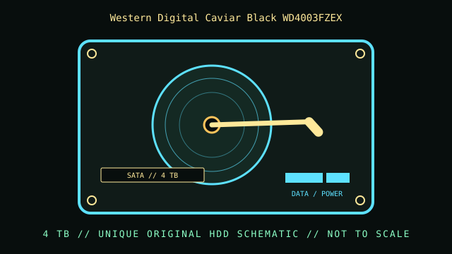

[ INDIVIDUAL CONSUMER HDD SKU ]
Western Digital Caviar Black WD4003FZEX
4 TB consumer SATA magnetic hard drive. This record identifies the exact Western Digital Caviar Black WD4003FZEX model only; capacities, suffixes, firmware and revisions within a product family can differ.

IDENTIFICATION: Match WD4003FZEX exactly; do not infer compatibility or cache from another WD Black 4 TB SKU. Read the full drive label and match the source-document revision before installation.
Model and capacity specifications
| Exact model / SKU | Western Digital Caviar Black WD4003FZEX |
|---|---|
| Capacity | 4 TB nominal decimal capacity; formatted user-addressable space is lower. |
| Form factor | 3.5-inch desktop HDD. Check bay height, mounting clearance and airflow. |
| Host interface | SATA 6 Gb/s SATA data and SATA power; this is not a SAS drive. SATA link generation negotiates with a supported host. |
| Rotational speed | 7,200 RPM |
| Cache | 64 MB DRAM |
| Sector format | 512e Advanced Format; confirm sector presentation through the host before creating partitions. |
| Recording technology | CMR, conventional magnetic recording; non-SMR desktop model. |
| Workload and reliability | Performance desktop workload positioning; not a substitute for a drive explicitly certified for enterprise/NAS workload. Check warranty by serial and region; test the specific used drive. |
| Host compatibility | Requires a SATA-capable motherboard/controller, SATA data connection, compatible SATA power, 3.5-inch mounting and an OS/controller stack that supports the complete capacity and sector format. For disks over 2 TB, use GPT and full-capacity-capable firmware/OS; booting from the device is a separate compatibility check. |
Host integration and preservation
Connector fit alone does not prove capacity or sector compatibility. Confirm the actual model, firmware, sector presentation and link negotiation in the target host before partitioning. A USB bridge may translate or hide device details.
- Record model and firmware, host controller, OS, sector sizes and SMART diagnostics before service.
- If the disk contains needed data or reports read errors, avoid writes, formatting, repeated power cycling and stress tests; preserve a verified image or consult a qualified recovery specialist.
- SMART and vendor self-tests are diagnostic evidence, not a guarantee. Keep independent verified backups and never rely on one aging HDD as the sole copy.
- SMR devices can differ in sustained-write and rebuild behavior; select workload-sensitive use only after checking exact model documentation.
Manufacturer specifications and sources
- Western Digital WD Black PC Hard Drive Series specification sheetWestern Digital manufacturer specification sheet for WD Black desktop drives; match exact model and suffix.
- Western Digital WD Black desktop SATA HDD specificationsManufacturer product-family specification and intended-use reference for WD Black desktop SATA HDDs.
Use the manufacturer documents to validate the full SKU and revision. Recheck physical sector reporting and SMART data on the actual device before deployment.